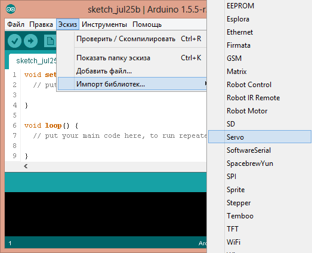
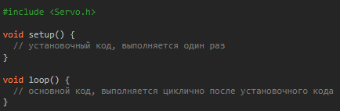
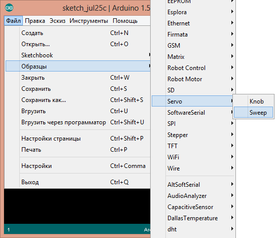
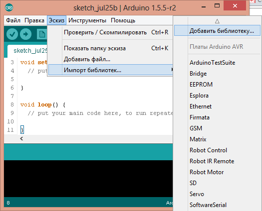
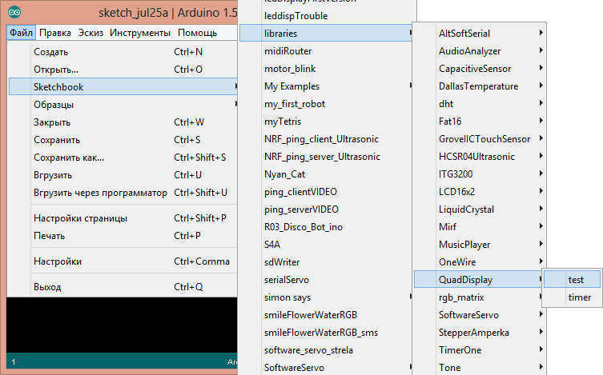
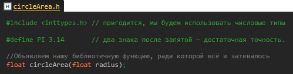
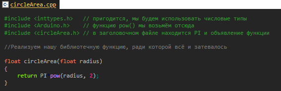
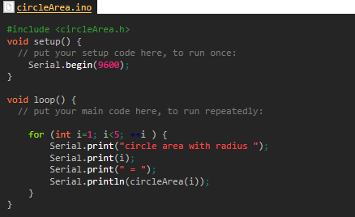

Библиотеки
Очень часто одни и те же части кода кочуют из программы в программу. Например, код для работы с датчиком. Чтобы не писать этот код каждый раз заново, его выносят в отдельные файлы — библиотеки. Огромное количество готового кода уже написано другими людьми, и с помощью библиотек его можно легко использовать в своих программах.
Подключение библиотек
Очень много готовых библиотек уже содержатся в среде Arduino IDE. Добавить библиотеку в свой код можно из меню: Эскиз - Импорт библиотек… - Название библиотеки:
После выбора пункта «Servo» IDE сама вставит в код нужные строчки:
Конечно, если вы знаете название нужной библиотеки, можно просто написать в самом верху скетча #include < Servo.h > — результат будет тем же самым.
Чтобы посмотреть пример работы с библиотекой из состава Arduino IDE, необходимо выбрать в меню: Файл - Образцы - Название библиотеки - Название примера
Сторонние библиотеки
Библиотек для Arduino действительно очень много. И только незначительная часть из них входит в среду программирования Arduino IDE. Чтобы добавить библиотеку в Arduino IDE её нужно скачать, все библиотеки скачиваются в формате .zip-архив. После загрузки необходимой библиотеки переходим в Arduino IDE и выполняем импорт библиотек в вашу рабочую папку Sketchbook/libraries, в которой должны находится все сторонние библиотеки. Сделать это можно прямо из среды программирования в меню: Эскиз - Импорт библиотек… - Добавить библиотеку… :
Откроется диалоговое окно, в котором необходимо выбрать архив [Ваш архив].zip и нажать кнопку Open. Готово. Теперь библиотеки можно добавлять в код. Примеры работы с библиотекой доступны в меню: Файл - Sketchbook - libraries - Название библиотеки - Название примера
В Arduino 1.6.7 и выше: Файл - Примеры - Название библиотеки - Название примера.
Создание библиотеки
Обычно при создании библиотеки создаются два файла: заголовочный файл и файл с кодом библиотеки. Давайте попробуем написать библиотеку, которая позволяла бы нам посчитать площадь круга. Создадим в директории %Sketchbook%\Arduino\libraries папку с названием нашей библиотеки (название может состоять только из латинских букв и цифр, но при этом не может начинаться с цифры). Назовём нашу библиотеку circleArea. Перейдём в созданную нами папку %Sketchbook%\Arduino\libraries\circleArea и создадим там два файла:
─ circleArea.h — заголовочный файл
─ circleArea.cpp — файл с кодом библиотеки.
Код circleArea.h будет таким:
Код circleArea.cpp будет таким:
Использование библиотеки в скетче будет таким:
